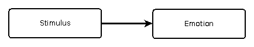
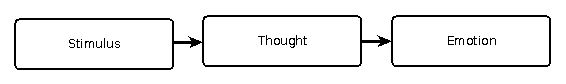

“He made me angry.”
This is a common way of talking in modern western society. We talk as though our emotions are directly caused by external stimuli.

It’s simple stimulus and response. In this example, some action “he” has taken has caused my anger; and in real life it often feels like this is what happens. The cause (his action) occurs very shortly before the effect (my anger), and if he hadn’t taken his action, I wouldn’t be angry. Post hoc, ergo propter hoc.
I think this model is incorrect.
We are never angry because of what others say or do … We say: “You make me angry.” “You hurt me by doing that.” “I feel sad because you did that.” We use our language in many different ways to trick ourselves into believing that our feelings result from what others do.
Marshall Rosenberg - Nonviolent Communication: A Language of Life
I struggled to understand this concept for some time. Surely, I thought, what I’m seeing here is cause and effect. Someone did something, and now I’m feeling this way. Take away the stimulus, and I wouldn’t have felt this way. How can you say I’m not mad because of what someone else did?
What crystalized the concept in my mind was drawing this diagram:

The central box in the diagram is what I think Rosenberg was getting at. Yes, the stimulus is in the causal chain of events leading to our emotion, but it’s not the only event in that chain. There’s at least one intervening node: the way we think about what has happened.
Our tendency is to oversimplify this model, leaving out the central node. As Rosenberg points out, even our language reinforces this interpretation: “You make me angry”, for example. In this construction, it would seem that the anger is a direct effect of whatever someone did. Rosenberg says this is not the case.
He’s not alone. The Stoic philosophy teaches that emotions arise as a result of one’s thoughts. Similarly, eastern meditation practices say that thoughts, such as longing and aversion, are the source of our suffering.
For Example
Suppose you’re playing football. You get the ball, and someone comes and tackles you. Maybe it hurts a bit. How do you feel about this? You might be frustrated for not getting away, but getting tackled is just part of the game.
Now suppose you’re strolling through a park and someone comes and tackles you. You probably feel very differently about this than in the football scenario. Maybe you get angry, maybe frightened.
The point of this example is simply to show that there is something between stimulus and emotion. It cannot be correct that stimulus directly causes emotion. If it did, then being tackled in a game of football should be just as terrifying as being tackled unexpectedly while walking through the park.
Opportunity
The knowledge that your emotions are caused by your thoughts gives you an opportunity: you have some measure of control over your thoughts, and thereby a way to influence your emotions. You are not at the mercy of the stimuli you experience.
There are several ways in which you can exert control, including
- cultivating useful habits of thought - part of cultivating virtue (at least as I view virtue)
- expanding the gap between stimulus and response - what some people call the sacred pause
Each of these is a topic for future discussion. For now, let me just write that both of these are skills that can be developed with practice. Further, this is good news.